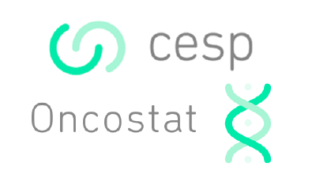
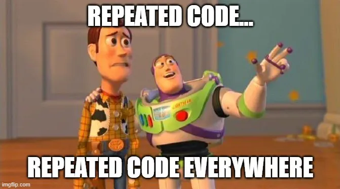

Programmation fonctionnelle
Dan Chaltiel
Les boucles et les fonctions

Note
Cette présentation est fortement inspirée de l’excellent site juba.github.io, en particulier les chapitres 14 (fonctions) et 18 (purrr). Allez voir ce site pour en apprendre encore plus!
for
sapply()
purrr::map()
tidyverseOn a un vecteur character, et on veut séparer chaque item en Nom/Prénom
On va donc utiliser str_split() (package stringr) dans une boucle.
forContre :
Pour:
for maléfiqueLa ligne x = str_split(...) a eu un effet de bord, c’est à dire un effet hors de sa zone, et ça a écrasé notre vecteur d’origine 😱😭
Dans une très grande boucle for, ce genre de conflit de noms peut arriver !
sapply()Maintenant, on veut appliquer table() à chaque colonne d’une dataframe :
Par défaut, sapply() simplifie implicitement l’output en vecteur ou en matrice. Comme ici, ça peut donner lieu à des étrangetés.
purrr à la rescousse!À l’opposé, les fonctions de purrr assurent à 100% le type de l’output:
map() retourne une listemap_chr() retourne un vecteur charactermap_dbl() retourne un vecteur numeric (double)map_lgl() retourne un vecteur logicalÇa donne aussi accès à la syntaxe “lambda-function” : argument par défaut = .x
Sur des fonctions vectorisées, on n’utilise pas de boucles :
On l’utilise sur les fonctions non vectorisées :
Un des “avantages” de sapply(), c’est que les noms sont automatiques :
Ca peut poser un problème en cas de noms très longs, donc map() ne prend que les noms explicites :
La fonction imap() permet de boucler sur un vecteur (.x) et ses noms (.y) en même temps.
Note
Notez que boucler sur une dataframe permet d’itérer sur les colonnes en conservant les noms.
A partir de purrr v1.1.0, on peut utiliser in_parallel() pour paralléliser nos fonctions.
Ici, on double presque notre vitesse, et ce serait encore plus impressionnant sur plus d’itérations ou une fonction plus longue !
“En R, tout ce qui existe est un objet, et tout ce qui se passe est une fonction.”
John Chambers
Une fonction prend en entrée des paramètres, les transforme, et retourne un résultat :
Par défaut, la dernière ligne vaut return() donc on peut simplifier.
Note
Une fonction dont le résultat ne dépend que de ses arguments est appelée une “fonction pure”.

Règle générale de programmation
Au 3ème copié-collé d’un même bout de code, on se force à faire une fonction !
On lui donne un nom explicite.
Ça améliore la lisibilité, la maintenabilité, et la robustesse du code.
Comparons deux fonctions :
Pourquoi la fonction de gauche est fort vilaine ?
a, qui peut changer / ne pas existerUn wrapper est une fonction courte qui vise à “réécrire” une fonction connue pour l’appliquer à un cas particulier.
Exemple de EDCimport::fct_yesno() :
Tip
La vraie fonction dans EDCimport est bien plus utile, elle gère les 0/1, les TRUE/FALSE, mais aussi les Yes/No encodés, par exemple 1-Yes/2-No ou encore les Oui/Non.
...L’ellipsis (...) s’utilise quand on ne sait pas de combien d’arguments on a besoin.
C’est le cas par exemple avec dplyr::select().
C’est surtout utile avec les wrappers pour passer des arguments :
On en a rarement besoin directement, mais on l’utilise avec c(...) ou list(...) :
En général, on n’appelle pas le 1er argument par nom car peu informatif.
Certaines fonctions obligent à appeler par nom certains arguments.
Contrairement à SAS, les erreurs R sont bloquantes et arrêtent le script : c’est le signe d’un problème majeur qu’il faut corriger.
Les warnings ne sont pas bloquants.
On les émet avec stop() et warning() (base R) ou cli_abort()et cli_warn() (package cli).
n_events_schoenfeld = function(za, zb, hr){
if(za<0) stop("`za` doit être positif!")
if(zb<0) stop("`zb` doit être positif!")
if(hr<0 || hr>1) stop("`hr` doit être compris entre 0 et 1!")
if(za>10) warning("`za` est vraiment très grand, t'es sûr de toi ?")
4*(za+zb)^2 / (log(hr)^2)
}
n_events_schoenfeld(za=-1.96, zb=1.28, hr=0.7)
#> Error in n_events_schoenfeld(za = -1.96, zb = 1.28, hr = 0.7): `za` doit être positif!
n_events_schoenfeld(za=19.6, zb=1.28, hr=0.7)
#> Warning in n_events_schoenfeld(za = 19.6, zb = 1.28, hr = 0.7): `za` est vraiment très grand, t'es
#> sûr de toi ?
#> [1] 13708.05library(cli)
#> Warning: le package 'cli' a été compilé avec la version R 4.4.3
n_events_schoenfeld = function(za, zb, hr){
if(za<0) cli_abort("{.arg za} doit être positif, il vaut {.val {za}}!")
if(za>10) cli_warn("{.arg za} est vraiment très grand ({.val {za}}), t'es sûr de toi ?")
4*(za+zb)^2 / (log(hr)^2)
}
n_events_schoenfeld(za=-1.96, zb=1.28, hr=0.7)
#> Error in `n_events_schoenfeld()`:
#> ! `za` doit être positif, il vaut -1.96!
n_events_schoenfeld(za=19.6, zb=1.28, hr=0.7)
#> Warning: `za` est vraiment très grand (19.6), t'es sûr de toi ?
#> [1] 13708.05Certaines fonctions ont une action concrete, par exemple print() ou write.csv().
On appelle ça des “effets de bord”.
On a rarement besoin d’en écrire nous-même.
On va prendre un exemple un peu compliqué pour revoir tout ce qu’on a appris !
Warning
Attention set.seed(NULL) dans une fonction est parfois déconseillé, je ne suis pas expert !
run_simulations(N=10, n=10, beta=0) %>% head(2)
#> # A tibble: 2 × 2
#> seed res
#> <int> <list>
#> 1 1 <tibble [1 × 7]>
#> 2 2 <tibble [1 × 7]>
run_simulations(N=10, n=10, beta=0) %>% unnest(res) %>% head(2)
#> # A tibble: 2 × 8
#> seed term estimate std.error statistic p.value args_beta args_sd
#> <int> <chr> <dbl> <dbl> <dbl> <dbl> <dbl> <dbl>
#> 1 1 x -0.516 0.449 -1.15 0.283 0 1
#> 2 2 x 0.240 0.415 0.577 0.580 0 1browser()Imaginons une fonction qui fait un calcul métier un peu obscur:
library(purrr)
f = function(bias, penalty, values){
ref = mean(values) + bias - penalty
values %>%
map(~{
data.frame(
input = .x,
score = (.x + bias) / (.x - ref)
)
}) %>%
list_rbind()
}
f(bias=2, penalty=1, values=c(3, 4, 5, 6))
#> input score
#> 1 3 -2
#> 2 4 -4
#> 3 5 -14
#> 4 6 16
f(bias=1, penalty=1, values=c(2, 4, 6))
#> input score
#> 1 2 -1.5
#> 2 4 Inf
#> 3 6 3.5Essayons d’ajouter if(.x - ref == 0) browser() dans la boucle.
. . .
Le code source de cette présentation est disponible sur GitHub.